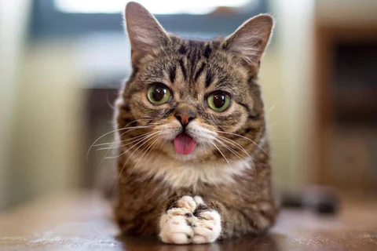
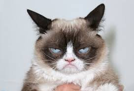
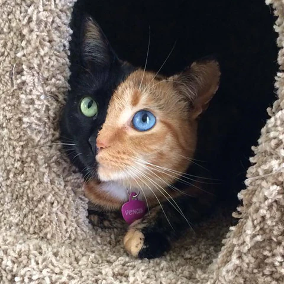

1.LIL BUB

posted by Arsh on june 25
You propably recognized him on the title page. It's "Lil Bub", ladies and gentleman! It's a celebrity cat known for his unique appearance. She was born with several genetic mutations and therefore has a this super cute, unusual look. Her tongue always hangs out, which is just the most adorable thing ever! Lil Bub even has her own Wikipedia Page!
Lil Bub meanwhile has over 2 million followers on the internet and even got to meet celebreties like Robert De Niro.
What a cutie!
Read More
2.GRUMPY CAT

posted by Arsh on june 26
The grumpiest cat you have ever seen! "Grumpy Cat" was an incredibly popular cat internet celebrity until she sadly passed away in May 2019. She was known for her permanently "grumpy" facial appearance, which was caused by an underbite and feline dwarfism. She came to prominence in November 2012, when a photo of her was posted on Reddit. She was the subject of a very popular internet meme, which I think we all know! Here is a lil' example of a typical grumpy cat meme
What a cutie!
Read More
3.VENUS, THE TWO-FACED KITTEN

posted by Arsh on june 28
Experts are unsure about how Venus the Cat got such a striking coloration! It is even speculated that she has two different DNA sets on each side of her body, which sounds super interesting, doesn't it? Anyway, no matter her biological background, she is absolutely gorgeous.
What a cutie!
Read More